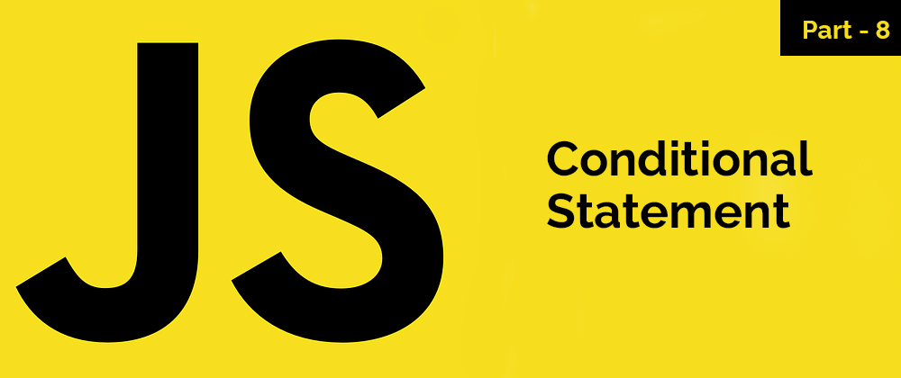

“Clean code always looks like it was written by someone who cares.”
Sequence, Selection & Iteration:
When you write lines of code, there are three ways you can control the order these lines will be executed by the computer:
Conditionals!
“Clean code always looks like it was written by someone who cares.”
- Robert C. Martin
- ● A program is a set of instructions that the computer executes.
- ● The order in which these instructions are executed depends on what type of program constructs are used.
- ● Program constructs are used to control the order/flow in which instructions are executed (or not executed).
When you write lines of code, there are three ways you can control the order these lines will be executed by the computer:
- 1. Sequence: This means that the computer will run your code in order, one line at a time from the top to the bottom of your program. It will start at line 1, then execute line 2 then line 3 and so on till it reaches the last line of your program.
- 2. Selection: Sometimes you only want some lines of code to be run only if a condition is met, otherwise you want the computer to ignore these lines and jump over them. This is achieved using IF statements. e.g. If a condition is met then lines 4, 5, 6 are executed otherwise the computer jumps to line 7 without even looking at line 4,5 and 6.
- 3. Iteration: Sometimes you want the computer to execute the same lines of code several times. This is done using a loop. There are three types of loops: For loops, while loops and repeat until loops. That’s handy as it enables you not to have to copy the same lines of code many times.